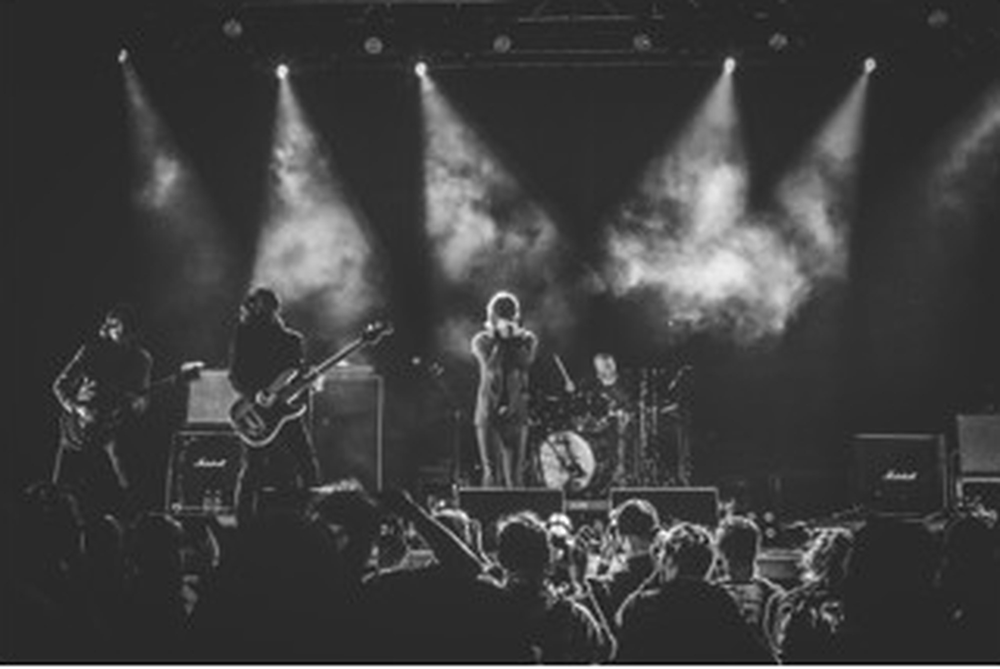
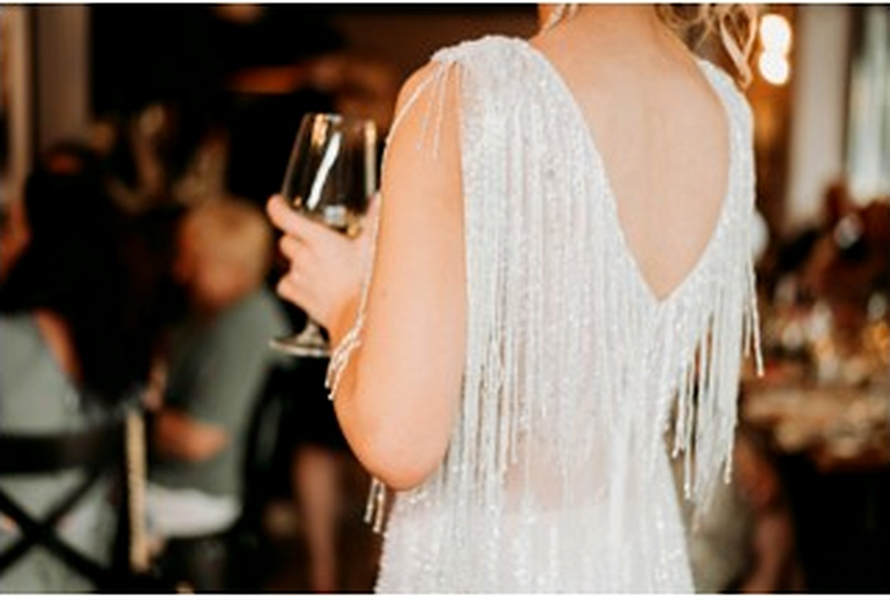
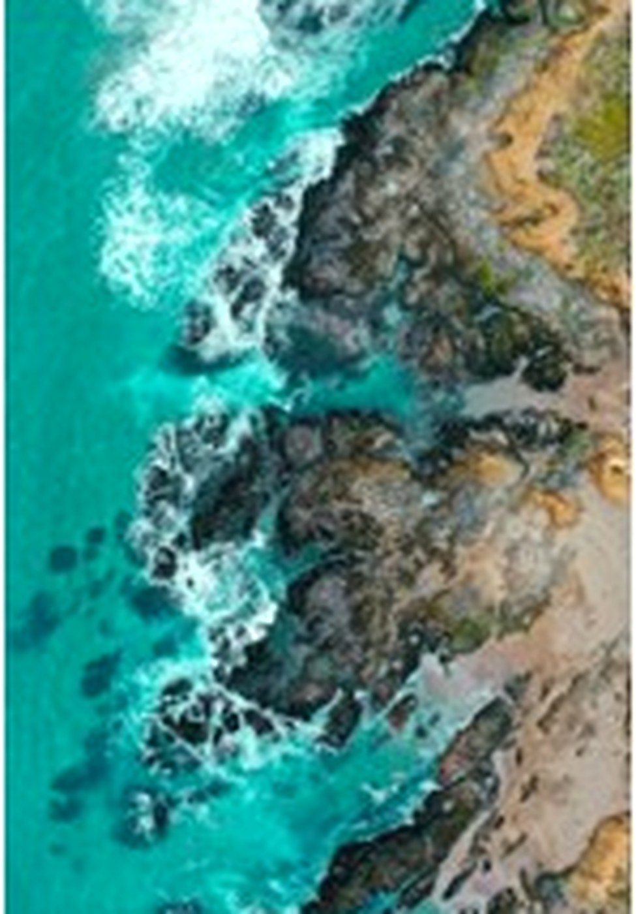

Photographer · Your city / region
Hi, I’m Frankie
Schulte.
I photograph graduations, events, live music, and the places I end up along the way.
People first. A little direction when it helps. Room for the real moment when it happens.
Selected work / preview edition
Scroll ↓Start here.
Graduation comes first right now. Events, concerts, and personal work follow without making the whole portfolio about one kind of job.


Practice 01
Portraits / milestonesGraduation
Graduation days move fast. I like to slow them down—some posed, some candid, all made to feel like you.
See the photographs ↗
Practice 02
Gatherings / celebrationsEvents
I’m there for the big moments and the smaller ones around them—the room, the details, and the people who make it feel alive.
See the photographs ↗
Practice 03
Live music / low lightConcerts
Loud rooms, difficult light, and the half-second when everything lines up.
See the photographs ↗Practice 04
Places / no shot listTravel
Photos I make when there isn’t a client, a timeline, or a shot list—just a place I want to remember clearly.
See the photographs ↗
A little about me
“Most people tell me they feel awkward in front of a camera. That’s completely normal.”
I don’t need you to show up knowing what to do. We can walk around, talk, try a few things, and make photographs that still feel like you.
More about how I work ↗Have something in mind?
Tell me what the day looks like.
A date, a location, and a rough idea are enough for the first message. We can figure out the rest together.
Start a conversation